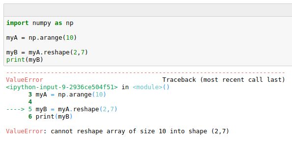
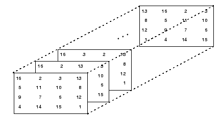
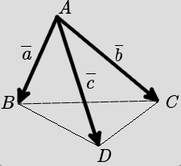

Module 1, Practical 9¶
In this practical we will practice Numpy and Matplotlib.
Numpy¶
Numpy is a fundamental library for high performance scientific computations. It provides fast and memory efficient data structures like ndarray with broadcasting capabilities, standard mathematical functions that can be applied on the arrays avoiding loops, linear algebra functions, I/O methods and it is well integrated with programming languages like C.
To use the functionalities of the library we always need to import it with (standard name is np):
import numpy as np
The official documentation of the numpy library can be found at http://www.numpy.org/.
Numpy ndarray¶
Numpy ndarray is an N-dimensional array object designed to contain homogeneous data (i.e. all data must have the same type). Every array (also called tensor) comes with two information: the shape (a tuple describing the dimensions of the array) and a dtype (the data type of the array).
Given a list of homogeneous values the ndarray can be obtained by using the np.array(list) method. Given the numpy array its shape, dimensionality and dtype can be obtained with array.shape, array.ndim and array.dtype.
An example follows:
[ ]:
import numpy as np
Aint = np.array([[1,2,3], [4,5,6]])
Afloat = np.array([[1.1,2,3], [4.2,5,6], [1,2,3]])
print(Aint)
print(type(Aint))
print(Aint.shape)
print(Aint.dtype)
print("")
print(Afloat)
print("type: {}".format(type(Afloat)))
print("shape: {}".format(Afloat.shape))
print("dtype: {}".format(Afloat.dtype))
Example:
Let’s create a ndarray holding the square root and one with the cubic root of the first five integers. Let’s put them together in a 2-d array and check its dimensions.
[ ]:
import numpy as np
import math
mysqrt = [math.sqrt(x) for x in range(0,5)]
mycrt = [x**(1/3) for x in range(0,5)]
myOtherRt = [x**(1/5) for x in range(0,5)]
print("Original lists:")
print(mysqrt)
print(mycrt)
print("")
npData = np.array(mysqrt)
print("Numpy ndarray:")
print(npData)
print("")
print("The shape:", npData.shape)
print("The dimensionality:", npData.ndim)
print("The type:", npData.dtype)
print("")
npData = np.array([mysqrt]) #NOTE: brackets!
print("The 2D version of the ndarray:")
print(npData)
print("")
print("The shape:", npData.shape)
print("The dimensionality:", npData.ndim)
print("The type:", npData.dtype)
print("")
twoDarray = np.array([mysqrt, mycrt, myOtherRt])
print("Another 2D array:")
print(twoDarray)
print("")
print("The shape:", twoDarray.shape)
print("The dimensionality:", twoDarray.ndim)
print("The type:", twoDarray.dtype)
We can also create arrays (matrices) full of zeros or ones or even diagonal matrices with the following numpy methods:
Array:
np.zeros(N)or matrix:np.zeros((N,M))Array:
np.ones(N)or matrix:np.ones((N,M))Matrix:
np.eye(N)
Numpy has its own range method that is called np.arange(N). Evenly spaced values in a range can be obtained also with np.linspace(S,E, num=N, endpoint=True/False) to obtain N linearly spaced values from S to E (included, unless endpoint = False is specified).
[ ]:
import numpy as np
zeros = np.zeros(3)
zMat = np.zeros((4,3))
ones = np.ones(3)
oMat = np.ones((3,2))
diag = np.eye(4)
rng = np.arange(5) #5 excluded!
print("Zero array (1x3)")
print(zeros)
print("")
D = zMat.shape
print("Zero matrix ({}x{})".format(D[0],D[1]))
print(zMat)
print("")
print("Ones array (1x3)")
print(ones)
print("")
print("Ones matrix (3x2)")
print(oMat)
print("")
print("Diagonal matrix")
print(diag)
print("")
print("Range 0-4")
print(rng)
print("A diagonal matrix:")
dm = np.diag(rng)
print(dm)
print("Its shape:")
print(dm.shape)
rng = np.arange(7)
print("Range 0-6")
print(rng)
myRange = np.linspace(-5,2.5,num =6)
print("6 linearly spaced elements in [-5 - 2.5]:")
print(myRange)
myRange = np.linspace(0,21,num =7, endpoint=False)
print("7 linearly spaced elements in [0 - 21):")
print(myRange)
Random arrays¶
Random arrays can be created from several different distributions (check here for all options). Through the random number generator default_rng which has been added to the newest versions of numpy (e.g. >1.16). The older syntax has been kept for back-compatibility, but the newer one using the default_rng should be used. Some examples include uniform distribution, normal, binomial,…
Example:
Create a random array of 1000 values drawn from: 1. a gaussian distribution with \(\sigma = 20\) and \(\mu = 2\) 2. a uniform distribution from 0 to 5 3. a binomial distribution with \(p = 0.5\) and \(n = 12\)
and plot their histogram.
[ ]:
import numpy as np
import matplotlib.pyplot as plt
#Create the random number generator
rng = np.random.default_rng()
#get the gaussian random array
g = rng.normal(20,2, 1000)
#a uniform random array with vals in [0,5]
u = rng.uniform(0,5, 1000)
#get the binomial random array
b = rng.binomial(12,0.5, 1000)
plt.hist(g, bins = 30)
plt.title("Gaussian(20,2)")
plt.xlabel("Random #")
plt.ylabel("Count")
plt.show()
plt.hist(u, bins = 10)
plt.title("Uniform(0,5)")
plt.xlabel("Random #")
plt.ylabel("Count")
plt.show()
plt.hist(b, bins = 10)
plt.title("Binomial(12,0.5)")
plt.xlabel("Random #")
plt.ylabel("Count")
plt.show()
It is also possible to specify the size of the output (with the tuple size) to get a matrix instead.
[ ]:
import numpy as np
rng = np.random.default_rng()
u = rng.uniform(0,1, size = (4,3))
print("Uniform distr. in (0,1). 4x3 matrix:")
print("")
print(u)
To always get the same values we need to initialize the random seed (a parameter of the pseudo-random sequence generator) always to the same value.
[ ]:
import numpy as np
rng = np.random.default_rng()
u = rng.uniform(0,1,size=(3,2))
u1 = rng.uniform(0,1,size=(3,2))
u2 = rng.uniform(0,1,size=(3,2))
print(" u: {}\n\n u1:{}\n\n u2:{}".format(u,u1,u2))
print("")
print("With random seed reinit.")
rng = np.random.default_rng(0) #seed init at 0
u = rng.uniform(0,1,3)
rng = np.random.default_rng(0) #seed init at 0
u1 = rng.uniform(0,1,3)
rng = np.random.default_rng(0) #seed init at 0
u2 = rng.uniform(0,1,3)
#no reinit!!!
u3 = rng.uniform(0,1,3)
print(" u: {}\n u1:{}\n u2:{}\n u3:{}".format(u,u1,u2, u3))
Numpy to and from pandas¶
Pandas Series and DataFrames are actually built on top of numpy ndarrays. Moreover, given a numpy matrix (or array) it is quite easy to convert it into a DataFrame (or Series).
[ ]:
import pandas as pd
import numpy as np
myDict = {"one" : 1, "two" : 2, "three" : 3, "four" : 4}
mySeries = pd.Series(myDict)
print(myDict)
print("")
print(mySeries)
print("")
print(type(mySeries))
print("")
print(type(mySeries.values))
print("")
myMat = np.diag(np.arange(6))
myDF = pd.DataFrame(myMat)
print("Numpy matrix")
print(myMat)
print("")
print("Pandas DataFrame")
print(myDF)
print("")
print("Reindexed DataFrame")
myDF = pd.DataFrame(myMat, index = list("ABCDEF"),
columns = ['a1','b2','c3','d4','e5','f6'])
print(myDF)
Reshaping¶
The shape of a numpy ndarray can be changed at any time with the methods reshape((R,C)) where R and C are the rows and columns used to shape an array into a matrix, and ravel that is used to go the other way around from matrix to array.
[ ]:
import numpy as np
myA = np.arange(12)
print("The array:")
print(myA)
print("")
myB = myA.reshape((2,6))
print("Reshaped (2x6):")
print(myB)
print("")
myC = myA.reshape((3,4))
print("Reshaped: (3x4)")
print(myC)
myD = myB.ravel()
print("")
print("Back to array:")
print(myD)
Be careful though, if shapes don’t match an error cannot reshape array is returned:
Iterating over arrays and Indexing¶
It is possible to loop over the elements of an array by element or by row of the matrix. In the first case we use the method np.ndarray.flat to make a matrix accessible as a one dimensional array. Check out the following examples:
[ ]:
import numpy as np
myA = np.arange(12)
print(myA)
print("")
print("Matrix:")
myA = myA.reshape((4,3))
print(myA)
print("Looping through elements:")# equivalent to:
for el in myA.flat: # for el in myA.ravel():
print("Element:", el) # print("Element:",el)
print("Looping row by row:")
for el in myA:
print("Row: ", el, "is a", type(el))
for j in el:
print("\tel:", j)
Indexing and slicing can be performed as usual with the [] operator. np.ndarray[i,j] returns the element at row i and column j.
A multi-dimensional matrix has more than 2 dimensions. They can be thought as several 2D matrices stacked one on top of the other:
Note that np.ndarray[0,:,:] is the whole first matrix. np.ndarray[:,0,:] is all the first rows, while np.ndarray[:,:,0] is all the first columns. Regarding slicing and indexing, the same reasoning applies to n-dimensional matrices. For example, myB below is a 3x3x3 matrix.
[ ]:
import numpy as np
rng = np.random.default_rng()
myA = rng.integers(0,10, size = (3,4))
print(myA)
print("")
print("myA[2,2] = ", myA[2,2])
print("myA[1,3] = ", myA[1,3])
print("myA[0,3] = ", myA[0,3])
print("second row:", myA[1,:])
print("")
print("3D matrix ",)
myB = np.random.randint(0,10, size = (3,3,3))
print(" - shape:", myB.shape)
print(myB)
print("")
print("myB[0,2,2] = ", myB[0,2,2])
print("Second matrix:")
print(myB[1,:,:])
print("Third row of second matrix:")
print(myB[1,2,:])
print("Second column of second matrix:")
print(myB[1,:,1])
Broadcasting and arithmetic functions¶
Universal functions are very efficient element-wise functions that can be applied on ndarrays. As seen in Pandas, operations involving scalar values and arrays are broadcast to all the elements of the ndarray, while operations performed on arrays having the same size are done element by element.
Note also that it is possible to perform some operations only on a sub-part of an ndarray. Moreover, if operators are applied to differently sized, but compatible, ndarrays (es. matrix 3x3x3 and vector 3x1), numpy will perform broadcast of the operator. Let’s see some examples:
[ ]:
import numpy as np
rng = np.random.default_rng()
A = rng.integers(0,10, size = (3,2))
B = rng.integers(0,10, size = (3,3,3))
C = rng.integers(0,10, size = (3,1))
print("Matrix A 3x2")
print(A)
print("")
print("Matrix B 3x3x3")
print(B)
print("")
print("Matrix C 3x1")
print(C)
print("")
print("A squared")
print(A**2)
print("")
print("A square-rooted")
print(np.sqrt(A))
print("")
print("B square-rooted")
print(np.sqrt(B))
print("A + C ")
print(A + C)
print("")
print("B + C ")
print(B + C)
print("")
print("B")
print(B)
print("Sub array B - 20")
B[:, 0:2 , 0:2 ] -= 20
print(B)
A lot of mathematical and statistical functions can be applied. Examples include trigonometric functions like sin, cos, tan,…, statistical functions like mean, std, max, min, cumsum,… see the documentation for a complete list.
Example: Let’s create and plot a sin, cos and \(\log_2 (2 + sin+cos)\) from -2Pi to 2Pi
[ ]:
import numpy as np
import matplotlib.pyplot as plt
A = np.arange(-2* np.pi, 2*np.pi, 0.01)
sA = np.sin(A)
cA = np.cos(A)
plt.plot(sA)
plt.plot(cA)
plt.plot(np.log2(2 + sA + cA))
plt.legend(["Sin(x)", "Cos(x)","$\log_2{2+sin(x)+cos(x)}$"])
plt.show()
Filtering¶
It is possible to filter np.ndarrays to retrieve the indexes (or the values) meeting specific conditions. The method where provides the index of those values. Note that if the np.ndarray is actually a matrix, where returns a tuple of indexes that are respectively the i and j coordinates of the elements fulfilling the condition.
Example: write a method that creates the np.ndarray with all the integers multiple of a certain number N that do not exceed M. The method should return also the indexes of those values in the original np.ndarray.
[ ]:
import numpy as np
def getMultiples(N,M):
all = np.arange(1,M+1)
ind = np.where(all % N == 0)
filt = (all % N == 0)
return ind, all[filt]
res = getMultiples(13, 1000)
print("Indexes: {}\nValues:{}".format(res[0],res[1]))
[ ]:
import numpy as np
myA = np.arange(12).reshape((3,4))
print(myA)
print("Elements divisible by 3")
indexes = np.where(myA % 3 == 0)
print("Indexes:\n{}".format(indexes))
for ind in range(len(indexes[0])):
i = indexes[0][ind]
j = indexes[1][ind]
print("({},{}) -> {}".format(i,j, myA[i][j]))
Example: Let’s do some filtering on the sine and cosine series plotted above.
[ ]:
import numpy as np
import matplotlib.pyplot as plt
A = np.arange(-2* np.pi, 2*np.pi, 0.01)
sA = np.sin(A)
cA = np.cos(A)
plt.plot(sA)
plt.plot(cA)
s0A_Y = sA[sA < 0] #get the values < 0
s0A_X = np.where(sA < 0) # the index of vaues < 0
c0A_Y = cA[np.all( [cA > 0.5 , cA < 0.75], axis = 0)]
c0A_X = np.where(np.all( [cA > 0.5 , cA < 0.75], axis = 0))
plt.scatter(s0A_X,s0A_Y, marker='o', c = 'red')
plt.scatter(c0A_X,c0A_Y, marker='X', c = 'green')
plt.legend(["Sin(x)", "Cos(x)","Sin(x) < 0", "Cos(x) in[0.5,0.75]"])
plt.show()
Note that in the code above, np.all tests if the two conditions are True at the same time (i.e. AND). If we want to test if at least one is True we use np.any. See np.all and np.any for more info:
[ ]:
import numpy as np
v1 = [True, False,False, True]
v2 = [False, False,True, True]
v3 = [False, False, False, True]
print("vals:")
vals = np.array([v1,v2,v3])
print(vals)
print("\nANY(vals):")
print(np.any(vals, axis=0))
print("\nANY(vals) on rows:")
print(np.any(vals, axis=1))
print("\nALL(vals):")
print(np.all(vals, axis=0))
print("\nALL(vals) on rows:")
print(np.all(vals, axis=1))
We can apply all and any on 3D matrices as well, note the behaviour of axis in this case, that can assume values in [0,1,2] as in the following picture and example:
[ ]:
import numpy as np
v1 = [[True, False],[False, True]]
v2 = [[False, False],[True, True]]
v3 = [[False, False], [False, True]]
print("vals:")
vals = np.array([v1,v2,v3])
print(vals)
print("\nThe matrix is {}D".format(vals.ndim))
print("First matrix:")
print(vals[0,:,:])
print("\nFirst row, all matrices:")
print(vals[:,0,:])
print("\nSecond column, all matrices:")
print(vals[:,:,1])
print("\nAXIS=0")
print("ANY:")
print(np.any(vals, axis=0))
print("ALL ")
print(np.all(vals, axis=0))
print("\nAXIS=1")
print("ANY:")
print(np.any(vals, axis=1))
print("ALL:")
print(np.all(vals, axis=1))
print("\nAXIS=2")
print("ANY:")
print(np.any(vals, axis=2))
print("ALL:")
print(np.all(vals, axis=2))
Linear algebra¶
In numpy the product operator * is used to perform element-wise product, and therefore the arrays in input must have the same size. Matrix-matrix multiplication can be done through the np.dot(x,y) method, which is also a method of the object np.ndarray and therefore if x is a np.ndarray of compatible size with y, we can perform their product with x.dot(y).
A ndarray can be transposed by using the method T.
[ ]:
import numpy as np
a = np.array([1, 2, 3, 1, 2, 3,1, 1 ,1])
A = a.reshape((3,3))
rng = np.random.default_rng()
B = rng.integers(0,10, size = (3,2))
print("A (3x3)")
print(A)
print("")
print("B (3x2)")
print(B)
print("")
print("AxB (3x2)")
print(A.dot(B))
print("")
print("A transposed:")
print(A.T)
Numpy has a module called linalg providing several functions that implement matrix decompositions, inversions, determinant calculation and so on. Some of these methods are linalg.inv for the matrix inversion, linalg.qr for the QR decomposition, linalg.cholesky for the Cholesky decomposition, linalg.eig to find the eigenvalues of a matrix, linalg.solve to solve a system of linear equations and so on.
The complete list of all available methods can be found in the documentation.
Example: Let’s create a random 4x4 matrix and invert it. Let’s finally check that the product of the matrix by its inversion yields the 4x4 identity matrix.
[ ]:
import numpy as np
from numpy import linalg
rng = np.random.default_rng()
A = rng.integers(0,10, size = (4,4))
print("Matrix A:")
print(A)
print("")
print("inv(A)")
A_1 = linalg.inv(A)
print(A_1)
print("")
print(np.dot(A,A_1)) # equivalent to print(A.dot(A_1))
Example: Let’s solve the following system of linear equations:\(\begin{cases} 2x + y - 2z = 3\\ x - y - z = 0\\ x + y + 3z = 12\end{cases}\)
[ ]:
import numpy as np
from numpy import linalg
A = np.array([[2, 1, -2],[1,-1,-1], [1, 1 ,3]])
b = np.array([3, 0, 12])
print("A")
print(A)
print("")
print("b")
print(b)
print("")
#Let's find x such that: Ax = b
x = linalg.solve(A,b)
print("x")
print(x)
#Let's double check Ax = b:
print("")
print("Ax:")
print(np.dot(A,x))
Matplotlib¶
Matplotlib is a library created for producing publication quality plots. To use matplotlib one has to import it in the python program. Typically this is done with
import matplotlib.pyplot as plt
Documentation and several examples can be found at the matplotlib website.
Figures can also be saved to files with plt.savefig('filename').
Example: [adapted from documentation] Let’s plot the function \(cos(2 * \Pi * x)*sin(2 * \Pi * x)\) for x ranging from 0 to 10, annotating the point (5,0).
[ ]:
import numpy as np
import matplotlib.pyplot as plt
x = np.arange(0, 10, 0.005)
y = np.cos(np.pi*x) * np.sin(2*np.pi*x)
fig = plt.figure()
ax = fig.add_subplot(111)
xdata = 5
ydata = 0
ax.plot(x, y)
ax.set_xlim(0, 10)
ax.set_ylim(-1, 1)
xdata = 5
ydata = 0
bbox = dict(boxstyle="round", fc="0.8")
arrowprops = dict(
arrowstyle = "->")
offset = 92
ax.annotate('(%.1f, %.1f)'%(xdata, ydata),
(xdata, ydata), xytext=(-1.5*offset, offset), textcoords='offset points',
bbox=bbox, arrowprops=arrowprops)
plt.show()
Example: Let’s plot simultaneusly \(sin(2 * \Pi * x)\), \(cos(2 \Pi x)\) and \(sin(2 \Pi x)*cos(2 \Pi x)\) for x ranging from 0 to 5.
[ ]:
import numpy as np
import matplotlib.pyplot as plt
x = np.arange(0, 5, 0.005)
y = np.sin(2*np.pi*x)
y1 = np.cos(2*np.pi*x)
y2 = np.sin(2*np.pi*x)*np.cos(2*np.pi*x)
f, (ax1, ax2, ax3) = plt.subplots(3, sharex=True, sharey=True)
ax1.plot(x, y,'r')
ax2.plot(x, y1,'g')
ax3.plot(x,y2,'b')
ax1.legend(["sin"])
ax2.legend(["cos"])
ax3.legend(["sin * cos"])
plt.show()
Exercises¶
Write a function that converts a numpy ndarray of temperatures expressed in Degrees Celsius into Degrees Farenheit. The formula to convert a temperature C in Celsius into F in Farenheit is the following:
\[F = C * 9/5 + 32\]Write then a function that converts a numpy ndarray of temperatures in Farenheit into Celsius.
Finally:
apply the Celsius to Farenheit conversion on an ndarray containing the following October’s minimum and maximum temperatures in Trento: tmin = [12, 11, 11, 8, 9, 10, 3, 8, 4, 5, 10, 9, 8, 9, 8, 7, 6, 4, 5, 6, 9, 9, 3, 3, 5] and tmax =[15, 22, 18, 20, 22, 22, 20, 21, 21, 21, 21, 23, 24, 24, 24, 25, 22, 22, 20, 20, 19, 15, 20, 23, 19];
check that both functions work correctly by converting the values from Celsius to Farenheit and back to Celsius;
plot the minimum and maximum temperatures in celsius on the same graph. Since the temperatures refer to the first 25 days of the month of October 2017, the x coordinate can be a range(1,26);
Show/Hide Solution
Create the following functions:
createRadomList : with parameters, N, min, max. Creates a list of N random integers ranging from min to max;
getIdentical : with parameters two lists of integers L1 and L2 having the same size. It returns the list of indexes I where L1[I] == L2[I]
check : gets lists L1, L2, identities (as computed by getIdentical) and a number N and prints if the first N and last N values in identities correspond to indexes of identical values in L1 and L2;
implement getIdentical using numpy.ndarrays. Call it getIdenticalNpy (hint: subtract the two arrays and find zeros).
Test the software creating two lists of 100,000 random numbers from 0 to 10. You should get something similar to:
100000
100000
9032
Index: 4 L: 1 L1: 1
Index: 21 L: 10 L1: 10
Index: 32 L: 6 L1: 6
Index: 37 L: 5 L1: 5
Index: 47 L: 1 L1: 1
Index: 99974 L: 8 L1: 8
Index: 99982 L: 6 L1: 6
Index: 99983 L: 3 L1: 3
Index: 99984 L: 4 L1: 4
Index: 99987 L: 0 L1: 0
Identities are OK!
9032
Index: 4 L: 1 L1: 1
Index: 21 L: 10 L1: 10
Index: 32 L: 6 L1: 6
Index: 37 L: 5 L1: 5
Index: 47 L: 1 L1: 1
Index: 99974 L: 8 L1: 8
Index: 99982 L: 6 L1: 6
Index: 99983 L: 3 L1: 3
Index: 99984 L: 4 L1: 4
Index: 99987 L: 0 L1: 0
Identities are OK!
Show/Hide Solution
Write some python code to solve the following system of linear equations:
\[\begin{split}\begin{cases} 3x + 4y + 2z - 5w = -9\\ 4x + 4y + 10z + w = 32\\ -x + 2y + -7z -w = -7\\ x + y + z + w = 1\end{cases}\end{split}\]Define then a function to compute the Euclidean norm of a ndarray in input.
Hint:
\[||X||_2 = \sqrt{{x_1}^2 + {x_2}^2 + ... + {x_n}^2}\]Compute then the Euclidean norm of the solution.
Implement a function that takes two N-dimensional vectors and computes the euclidean distance between them. Compute the distance between the solution of the system of equations above and the vector V = [7,120,11,33]. Check also that the distance between a vector and itself is zero. The Euclidean distance between two vectors P and Q can be computed as: \(\sqrt{\sum\limits_{i=1}^n (q_i -p_i)^2}\).
Show/Hide Solution
Implement the following functions working on numpy ndarrays:
The component form of a vector
comp(A,B)starting in point A and ending in point B is \(\overline{AB}\). Hint: if \(A=(a_1,...,a_n)\) and \(B=(b_1,...,b_n)\), \(\overline{AB} = (b_1 - a_1, ..., b_n - a_n)\).The direction cosines of a 3D vector
dirCos(A). If \(P=(x,y,z)\) the direction cosines are the cosines of the angles made by the vector with the three axes. They can be computed as:
\[\frac{x}{\sqrt(x^2+y^2+z^2}, \frac{y}{\sqrt(x^2+y^2+z^2}, \frac{z}{\sqrt(x^2+y^2+z^2}\]
The angle between two vectors
angle(A,B). Given two vectors \(A = (a_x,a_y,a_z)\) and \(B = (b_x,b_y,b_z)\), \(cos(\alpha) = \frac{A \cdot B}{||A||_2||B||_2}\) where the Euclidean norms are computed as in the previous example.
The volume of the pyramid described by three 3D vectors \(\overline{a},\overline{b},\overline{c}\): 
the volume
pyrVol(a,b,c)can be computed as: \(\frac{1}{6} |det(M)|\), where \(M = \begin{bmatrix}\overline{a} \\ \overline{b} \\ \overline{c}\end{bmatrix}\), det is the determinant of the matrix anx || represents the absolute value.Define some numpy arrays starting from the following lists:
A = [10, 3, 4, 7, 12], B = [6, 7, 8, 1, 1] and test
comp(A,B)Va = [90,12,72] and test
dirCos(Va)VA = [70,9,12] and VB = [1,-10,30] and test
angle(VA,VB)a = [10, 20, 30], b = [ 4, 7, 21], c = [-5, 4, 12] and test
pyrVol(a,b,c)
Check your solutions here.
Show/Hide Solution
Implement the power iteration algorithm which is a method to obtain an approximation of the biggest (in absolute value) eigenvalue of a matrix A.
The algorithm starts from a random vector \(b_0\) and keeps computing \(b_{k+1} = \frac{A\cdot b_{k}}{min(A\cdot b_{k})}\). When the algorithm ends, the eigenvalue is actually the value: \(min(A\cdot b_{k})\)
The powerIteration function will have the maximum number of iterations and dThr as parameters powerIteration(A,maxIt, dThr). The computation will stop either when the maximum number of iterations maxIt is reached or when the Euclidean distance between b_{k-1} and b_k is lower than dThr.
Check the result against numpy eigenvalues obtained with np.linalg.eig() using various matrices.
Show/Hide Solution
Implement a function
movingAvg(A,n)where A is a numpy one dimensional array and n is the window size on which computing the average, that outputs the moving average over a numpy one dimensional array. Es. A = [1,2,3,4,5]movingAvg(A,2) = [1.5, 2.5, 3.5, 4.5], whilemovingAvg(A,3) = [2,3,4]without using for loops. Hint: use cumsum and clever slicing. Assess the smoothing effect of the moving average by creating a numpy array containing a sinusoidal wave with some additional noise (i.e. use np.sin and np.random.rand) and testing several values of the window size n.
Show/Hide Solution
Generate and Analyze Random Matrices Create a 5×5 NumPy matrix of random integers between 0 and 20.
Print the matrix and its transpose.
Compute and print the sum of each column and each row.
Find the position(s) of the maximum element in the matrix.
Show/Hide Solution
Vectorized Operations and Filtering Create a NumPy array with 50 equally spaced values from -10 to 10.
Compute \(y = \sin(x) + 0.1x^2\).
Filter all values of
ythat are greater than 2 and print their correspondingx.Plot both the original function and highlight the filtered points in red.
Show/Hide Solution
Matrix Transformations Create a 4×4 identity matrix.
Multiply it by a random 4×4 matrix of integers (0–9).
Compute its determinant and inverse (if possible).
Verify that the product of a matrix and its inverse gives the identity matrix (within numerical tolerance).
Show/Hide Solution
Linear Regression with NumPy Generate 100 random points following the linear relation \(y = 3x + 5 + \epsilon\), where \(\epsilon\) is Gaussian noise (mean 0, std 1).
Estimate the slope and intercept using the least squares formula.
Plot the original points and the fitted line.
Show/Hide Solution
3D Surface Plot
Create a 3D surface plot of the function \(z = \sin(\sqrt{x^2 + y^2})\) for \(x, y \in [-5, 5]\). Use a meshgrid with 100 points per axis.
Show/Hide Solution